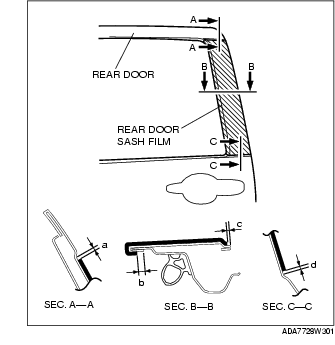

Rear door sash film installation
1. Remove any grease or dirt from the adhesion surface of the door.
2. Cut away the unused portion along the dotted lines.

3. Peel off the backing paper and attach the rear door sash film onto the door as shown in the figure.

Clearance
- a: 0-1.0 mm {0-0.039 in}
- b: 3.0-4.0 mm {0.12-0.15 in}
- c: 3.0 mm {0.12 in} or less
- d: 0-4.0 mm {0-0.15 in}
4. Peel off the transparent protective film on the rear door sash film.